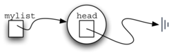
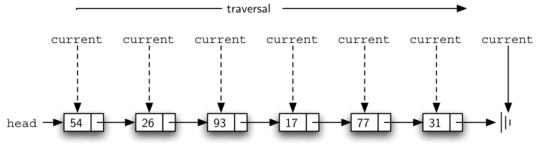

As we suggested above, the unordered linked list will be built from a collection of nodes, each linked to the next by explicit pointers. As long as we know where to find the first node (containing the first item), each item after that can be found by successively following the next links. With this in mind, the UnorderedList class must maintain a reference to the first node. Listing 4.5.1 shows the constructor. Note that each list object will maintain a single reference to the head of the list.
Listing4.5.1.UnorderedList Constructor
class UnorderedList {
public:
Node *head;
UnorderedList() {
head = nullptr;
}
};
Initially when we construct a list, there are no items. The assignment and declaration statment
UnorderedList myList;
creates the linked list representation shown in Figure 4.5.2. As we discussed in the Node class, the special reference nullptr will again be used to state that the head of the list does not refer to anything. Eventually, the example list given earlier will be represented by a linked list as shown in Figure 4.5.3. The head of the list points to the first node which contains the first item of the list. In turn, that node holds a reference to the next node (the next item) and so on. It is very important to note that the list class itself does not contain any node objects. Instead it contains a single pointer to only the first node in the linked structure.

A diagram of a newly constructed, empty linked list. A variable labeled "mylist" points to a circular node labeled "head." The "head" node contains no data and points to the end of the list, represented by a vertical line. The diagram depicts the initial state of an empty linked list with no elements inserted.
Figure4.5.2.Newly constructed (empty) list.
A diagram of a linked list with multiple elements inserted. The "mylist" variable points to a circular node labeled "head." The "head" node links to a sequence of rectangular nodes, each containing a data value: "54," "26," "93," "17," "77," and "31." Each node points to the next in sequence, with the final node pointing to the end of the list, represented by a vertical line. This illustrates the progression of the linked list as data is added.
Figure4.5.3.Linked list with some items inserted.
The isEmpty method, shown in Listing 4.5.4, simply checks to see if the head of the list is a reference to nullptr. The result of the boolean expression this->head==nullptr will only be true if there are no nodes in the linked list. Since a new list is empty, the constructor and the check for empty must be consistent with one another. This shows the advantage to using the reference nullptr to denote the “end” of the linked structure. Two references are equal if they both refer to the same object. We will use this often in our remaining methods.
Listing4.5.4.UnorderedListisEmpty() method
bool isEmpty() {
return head == nullptr;
}
So, how do we get items into our linked list? We need to implement the add method. However, before we can do that, we need to address the important question of where in the linked list to place the new item. Since this linked list is unordered, the specific location of the new item with respect to the other items already in the linked list is not important. The new item can go anywhere. With that in mind, it makes sense to place the new item in the easiest location possible.
Recall that the linked list structure provides us with only one entry point, the head of the linked list. All of the other nodes can only be reached by accessing the first node and then following next links. This means that the easiest place to add the new node is right at the head, or beginning, of the linked list. In other words, we will make the new item the first item of the linked list and the existing items will need to be linked to this new first item so that they follow.
The linked linked list shown in Figure 4.5.3 was built by calling the add method a number of times as in Listing 4.5.5.
Note that since 31 is the first item added to the linked list, it will eventually be the last node on the linked list as every other item is added ahead of it. Also, since 54 is the last item added, it will become the data value in the first node of the linked list.
The add method is shown in Listing 4.5.6. Each item of the linked list must reside in a node object. Line 2 creates a new node and places the item as its data. Now we must complete the process by linking the new node into the existing structure. This requires two steps as shown in Figure 4.5.7. Step 1 (line 3) changes the next reference of the new node to refer to the old first node of the linked list. Now that the rest of the linked list has been properly attached to the new node, we can modify the head of the linked list to refer to the new node. The assignment statement in line 4 sets the head of the linked list.
Listing4.5.6.UnorderedListadd Method
void add(int item) {
Node *temp = new Node(item);
temp->setNext(head);
head = temp;
}
A diagram illustrating the process of adding a new node with the value "26" to a linked list. The list initially starts with a "head" pointer referencing the first node containing "93." This node links to subsequent nodes with values "17," "77," and "31," ending with a vertical line that marks the end of the list. The process involves two steps. In Step 1, the "next" field of the new node ("26") is set to point to the node currently referenced by the "head" (node "93"). In Step 2, the "head" pointer is updated to reference the new node ("26"), effectively inserting it at the beginning of the list. The "temp" variable temporarily holds the new node during this process.
Figure4.5.7.Adding a Node.
The order of the two steps described above is very important. What happens if the order of line 3 and line 4 is reversed? If the modification of the head of the linked list happens first, the result can be seen in Figure 4.5.8. Since the head was the only external reference to the linked list nodes, all of the original nodes are lost and can no longer be accessed.
A diagram showing an incorrect process for adding a new node ("26") to a linked list, resulting in the loss of the original head node. The "head" pointer is updated to reference the new node ("26") without first preserving a reference to the original head node ("93"). The original linked list, consisting of nodes "93," "17," "77," and "31," becomes disconnected, with no external reference to it, as indicated by the dashed oval labeled "no external reference." The new node ("26") points to the end of the list, represented by a vertical line, making it the only accessible node in the structure. The "temp" variable temporarily holds the new node during this process.
Figure4.5.8.Incorrect Order for Adding a Node.
The next methods that we will implement — size, search, and remove — are all based on a technique known as linked list traversal. Traversal refers to the process of systematically visiting each node. To do this we use an external reference that starts at the first node in the linked list. As we visit each node, we move the reference to the next node by “traversing” the next reference.
To implement the size method, we need to traverse the linked list and keep a count of the number of nodes that occurred. Listing 4.5.9 shows the C++ code for counting the number of nodes in the linked list. The external reference is called current and is initialized to the head of the linked list in line 2. At the start of the process we have not seen any nodes so the count is set to \(0\text{.}\) Lines 4–6 actually implement the traversal. As long as the current reference has not seen the end of the linked list (nullptr), we move current along to the next node via the assignment statement in line 6. Again, the ability to compare a reference to nullptr is very useful. Every time current moves to a new node, we add \(1\) to count. Finally, count gets returned after the iteration stops. Figure 4.5.10 shows this process as it proceeds down the linked list.
Listing4.5.9.UnorderedListsize Method
int size() {
Node *current = head;
int count = 0;
while (current != nullptr) {
count++;
current = current->getNext();
}
return count;
}

A diagram demonstrating the traversal process of a linked list. The list begins with a "head" pointer referencing the first node, which contains the value "54." Subsequent nodes contain values "26," "93," "17," "77," and "31," in that order, ending with a vertical line that marks the end of the list. The traversal process is indicated by an arrow labeled "traversal," moving from left to right. A variable labeled "current" sequentially points to each node, starting at the "head" and progressing through each node in the list until it reaches the end marker. Dashed arrows illustrate the movement of the "current" pointer as it traverses the list.
Figure4.5.10.Traversing a Linked List.
Searching for a value in a linked list implementation of an unordered linked list also uses the traversal technique. As we visit each node in the linked list we will ask whether the data stored there matches the item we are looking for. In this case, however, we may not have to traverse all the way to the end of the linked list. In fact, if we do get to the end of the linked list, that means that the item we are looking for must not be present. Also, if we do find the item, there is no need to continue.
Listing 4.5.11 shows the implementation for the search method. As in the size method, the traversal is initialized to start at the head of the linked list (line 2). As long as there are more nodes to visit and we have not found the item we are looking for, we continue to check the next node. The question in line 4 asks whether the data item is present in the current node. If so, we return true. When we reach the end of the list and the item has not been found, we return false.
As an example, consider invoking the search method looking for the item 17.
>>> mylist.search(17);
1
Since 17 is in the linked list, the traversal process needs to move only to the node containing 17. At that point, the variable found is set to true and the while condition will fail, leading to the return value seen above. This process can be seen in Figure 4.5.12.
A diagram demonstrating the process of searching for a specific value ("17") in a linked list. The list starts with a "head" pointer referencing the first node, which contains the value "54." Subsequent nodes contain values "26," "93," "17," "77," and "31," in that order, ending with a vertical line marking the end of the list. The traversal process is indicated by an arrow labeled "traversal," moving from left to right. A variable labeled "current" sequentially points to each node, beginning at the "head" and progressing through the list. The node with the value "17" is circled to indicate it has been located. Dashed arrows illustrate the movement of the "current" pointer during the search process.
Figure4.5.12.Searching a Linked List.
The remove method requires two logical steps. First, we need to traverse the linked list looking for the item we want to remove. Once we find the item (recall that we assume it is present), we must remove it. The first step is very similar to search. Starting with an external reference set to the head of the linked list, we traverse the links until we discover the item we are looking for. Since we assume that item is present, we know that the iteration will stop before current gets to nullptr. This means that we can simply use the boolean found in the condition.
When found becomes true, current will be a reference to the node containing the item to be removed. But how do we remove it? One possibility would be to replace the value of the item with some marker that suggests that the item is no longer present. The problem with this approach is the number of nodes will no longer match the number of items. It would be much better to remove the item by removing the entire node.
In order to remove the node containing the item, we need to modify the link in the previous node so that it refers to the node that comes after current. Unfortunately, there is no way to go backward in the linked list. Since current refers to the node ahead of the node where we would like to make the change, it is too late to make the necessary modification.
The solution to this dilemma is to use two external references as we traverse down the linked list. current will behave just as it did before, marking the current location of the traverse. The new reference, which we will call previous, will always travel one node behind current. That way, when current stops at the node to be removed, previous will be referring to the proper place in the linked list for the modification.
Listing 4.5.13 shows the complete remove method. Lines 2–3 assign initial values to the two references. Note that current starts out at the linked list head as in the other traversal examples. previous, however, is assumed to always travel one node behind current. For this reason, previous starts out with a value of nullptr since there is no node before the head (see Figure 4.5.14). The boolean variable found will again be used to control the iteration.
Listing4.5.13.UnorderedListremove Method
void remove(int item) {
Node *current = head;
Node *previous = nullptr;
bool found = false;
while (!found) {
if (current->getData() == item) {
found = true;
} else {
previous = current;
current = current->getNext();
}
}
if (previous == nullptr) {
head = current->getNext();
} else {
previous->setNext(current->getNext());
}
}
A diagram showing the initialization process for removing a node from a linked list. The list begins with a "head" pointer referencing the first node, which contains the value "54." Subsequent nodes contain values "26," "93," "17," "77," and "31," in that order, ending with a vertical line marking the end of the list. Two variables, "current" and "previous," are introduced for the removal process. The "current" variable initially points to the "head" node, while the "previous" variable points to the null marker (indicated by a vertical line before the "head"). These pointers will be used to traverse and modify the linked list during the removal operation.
Figure4.5.14.Initialization of remove method.
In lines 6–7 we ask whether the item stored in the current node is the item we wish to remove. If so, found can be set to true. If we do not find the item, previous and current must both be moved one node ahead. Again, the order of these two statements is crucial. previous must first be moved one node ahead to the location of current. At that point, current can be moved. This process is often referred to as “inch-worming” as previous must catch up to current before current moves ahead. Figure 4.5.15 shows the movement of previous and current as they progress down the linked list looking for the node containing the value 17.
A diagram showing the step-by-step process of removing a node ("17") from a linked list. The list begins with a "head" pointer referencing the first node, which contains the value "54," followed by nodes with values "26," "93," "17," "77," and "31," ending with a vertical line. The process is illustrated in four steps, labeled "Step 0" to "Step 3." - In Step 0, the "current" pointer starts at the "head" node ("54"), and the "previous" pointer is set to null. - In subsequent steps, both "current" and "previous" pointers traverse the list. The "current" pointer moves to each node sequentially while the "previous" pointer follows behind. - By Step 3, "current" points to the target node ("17"), and "previous" points to the preceding node ("93"). At this step, the traversal stops.
Figure4.5.15.Initialization of remove method.
Once the searching step of the remove has been completed, we need to remove the node from the linked list. Figure 4.5.16 shows the link that must be modified. However, there is a special case that needs to be addressed. If the item to be removed happens to be the first item in the linked list, then current will reference the first node in the linked list. This also means that previous will be nullptr. We said earlier that previous would be referring to the node whose next reference needs to be modified in order to complete the remove. In this case, it is not previous but rather the head of the linked list that needs to be changed (see Figure 4.5.17).
A diagram showing the actual removal of the node with the value "17" from the middle of a linked list. The "current" pointer is positioned on the node with the value "17," which is to be removed, while the "previous" pointer points to the preceding node ("93"). The "next" reference of the "previous" node is updated to skip the "current" node and point directly to the node after ("77"). This effectively removes the "17" node from the linked list while maintaining the proper structure of the list.
Figure4.5.16.Removing an Item from the Middle of the Linked List.
A diagram illustrating the removal of the first node ("head") from a linked list. The list starts with the "head" pointer referencing the first node, which contains the value "54," followed by nodes with values "26," "93," "17," "77," and "31," ending with a vertical line. The "current" pointer is positioned on the first node ("54"), which is to be removed. The "previous" pointer is initially set to nullptr, indicating the absence of a preceding node. The "head" pointer is updated to reference the next node ("26"), effectively removing the first node from the list while maintaining the integrity of the linked list structure.
Figure4.5.17.Removing the First Node from the Linked List.
Line 12 allows us to check whether we are dealing with the special case described above. If previous did not move, it will still have the value nullptr when the boolean found becomes true. In that case (line 13) the head of the linked list is modified to refer to the node after the current node, in effect removing the first node from the linked list. However, if previous is not nullptr, the node to be removed is somewhere down the linked list structure. In this case the previous reference is providing us with the node whose next reference must be changed. Line 15 uses the setNext method from previous to accomplish the removal. Note that in both cases the destination of the reference change is current.getNext(). One question that often arises is whether the two cases shown here will also handle the situation where the item to be removed is in the last node of the linked list. We leave that for you to consider.
You can try out the UnorderedList class in Task 4.5.1.a.
Exploration4.5.1.Unordered List Implementations.
(a)C++ Implementation.
#include <iostream>
using namespace std;
//creates a node class
class Node {
//defines data, and next as a pointer.
private:
int data; //data in the beginning node
Node *next; //pointer to the next node
public:
Node(int initdata) {
data = initdata; //the initialized data is set as the head
next = nullptr; //the next node is set to nullptr, as there is no next node yet.
}
int getData() { //function that return data of a given node.
return data;
}
Node *getNext() { // pointer that gets the next node
return next;
}
void setData(int newData) { // sets data in node
data = newData;
}
void setNext(Node *newnext) {
next = newnext;
}
};
// creates unorderedlist that points to the head of the linked list
class UnorderedList {
public:
Node *head;
UnorderedList() { // makes the head node equal to nullptr
head = nullptr;
}
bool isEmpty() { // the head node is empty if it is nullptr
return head == nullptr;
}
void add(int item) { //cerates a "temp" pointer that adds the new node to the head of the list
Node *temp = new Node(item);
temp->setNext(head);
head = temp;
}
int size() {
// creates a "current" pointer that iterates through
// the list until it reaches nullptr
Node *current = head;
int count = 0;
while (current != nullptr) {
count++;
current = current->getNext();
}
return count;
}
// creates "current" pointer that iterates through the list
// untli it finds the item being searched for, and returns a boolean value
bool search(int item) {
Node *current = head;
while (current != nullptr) {
if (current->getData() == item) {
return true;
} else {
current = current->getNext();
}
}
return false;
}
// uses current and previous pointer to iterate through the lists
// finds the items that is searched for, and removes it
void remove(int item) {
Node *current = head;
Node *previous = nullptr;
bool found = false;
while (!found) {
if (current->getData() == item) {
found = true;
} else {
previous = current;
current = current->getNext();
}
}
if (previous == nullptr) {
head = current->getNext();
} else {
previous->setNext(current->getNext());
}
}
friend ostream& operator<<(ostream& os, const UnorderedList& ol);
};
ostream& operator<<(ostream& os, const UnorderedList& ol) {
Node *current = ol.head;
while (current != nullptr) {
os<<current->getData()<<endl;
current = current->getNext();
}
return os;
}
int main() {
UnorderedList mylist;
mylist.add(31);
mylist.add(77);
mylist.add(17);
mylist.add(93);
mylist.add(26);
mylist.add(54);
cout<<"SIZE: "<<mylist.size()<<endl;
cout<<"contains 93?\t"<<mylist.search(93)<<endl;
cout<<"contains 100?\t"<<mylist.search(100)<<endl<<endl;
mylist.add(100);
cout<<"contains 100?\t"<<mylist.search(100)<<endl<<endl;
cout<<"SIZE: "<<mylist.size()<<endl;
mylist.remove(54);
cout<<"SIZE: "<<mylist.size()<<endl;
mylist.remove(93);
cout<<"SIZE: "<<mylist.size()<<endl;
mylist.remove(31);
cout<<"SIZE: "<<mylist.size()<<endl;
mylist.search(93);
cout<<"MY LIST: "<<endl<<mylist;
return 0;
}
(b)Python Implementation.
The remaining methods append, insert, index, and pop are left as exercises. Remember that each of these must take into account whether the change is taking place at the head of the linked list or someplace else. Also, insert, index, and pop require that we name the positions of the linked list. We will assume that position names are integers starting with 0.